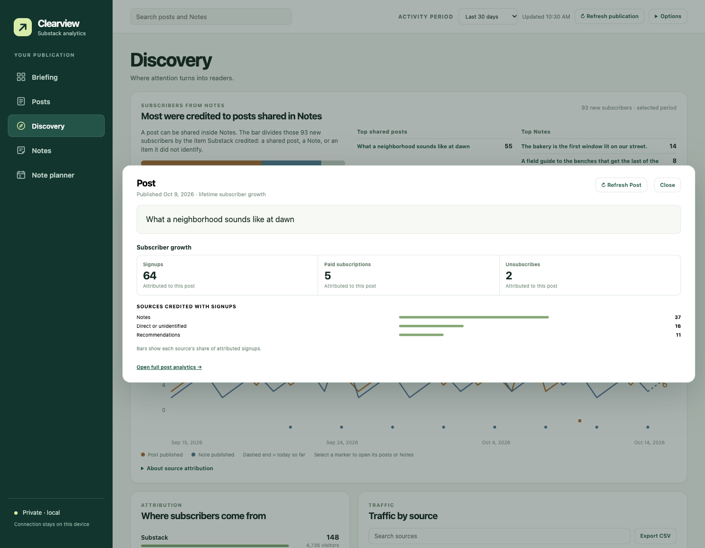
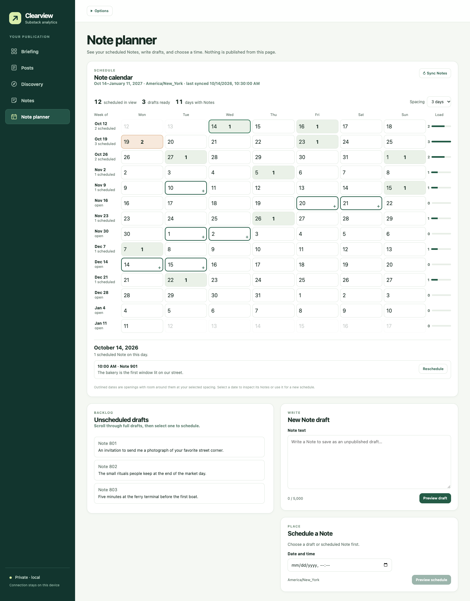

Explore Clearview.
See what’s growing, trace where subscribers came from, and plan what to write next. The screenshots use a fictional publication.
BRIEFING
See what changed
Compare views and new subscribers with the previous period. See how your latest writing performed and when each post or Note went out.

DISCOVERY
Find what brought readers in
Compare how many subscribers came through each source and see the posts and Notes Substack credits for signups.

Open a post to see its signup sources
See attributed signups, paid subscriptions, and unsubscribes without leaving Discovery.

NOTES
Compare your Notes side by side
See how each Note’s reach compares with a typical Note at the same age. Sort engagement by totals or per 1,000 impressions.

NOTE PLANNER
See what’s scheduled and where there’s room
Review the next 90 days, choose from your drafts, and confirm a schedule from the calendar.
